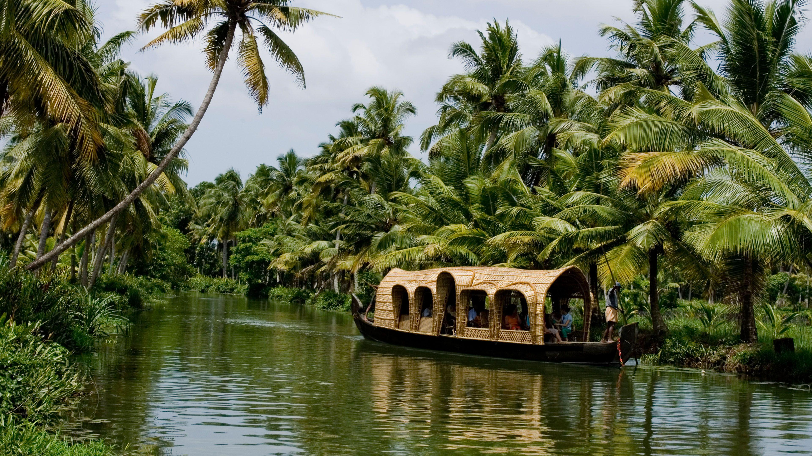

Periyar National Park and Wildlife Sanctuary

About Periyar National Park and Wildlife Sanctuary:
- One of South India's most popular tourist attractions
- Periyar National Park and Wildlife Sanctuary is centered around a lake built by British engineers in 1895 for irrigation and to provide water to the city of Madurai.
- Established in 1934, this beautiful park is home to numerous species of mammals, including a large free-roaming Indian elephant population, wild boar, otters, the lion-tailed macaque, and more than 20 Bengal tigers.
- Bird watching is a popular activity with frequent sightings of species such as darters, storks, kingfishers, hornbills, and racket-tailed drongos, along with many interesting varieties of butterflies.
What to do in the Sanctuary:
- The best ways to enjoy the park's splendid mountain scenery are to take a lake cruise or guided jungle walk
- The latter allowing visitors a chance to come face to face with elephant herds and observe other wildlife from watchtowers and viewing platforms.
Hot Tip:
- Be sure to stop at one of the many nearby spice, tea, or coffee plantations for a tour.